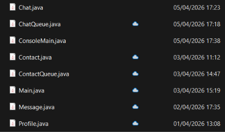

Portfoilo

A Java based messaging system - 2026
Introduction to data structures and algorithms
More Info about the System:
This systems main functions include being able to create a chat between contacts and their profile. Then messages are able to be sent between them. The user is at first given a main menu that allows them to chose between various option such as; creating chats, editing chats or messages, opening chats, editing your profile.
Societal Impacts of telephone line throughout the UK in - 2026
Computing and Society
A presentation about the history and impatcts the development of telephnes line and adjacent tech had throughout the UK.
The presentation went over a variety of points relating to the telegraph including; Its invention, data about its installation accross the UK, how it managed to gain traction and how it later developed into Modern Communication devices.
Other minor Qualifications~
Advanced Higher Graphic Communication
Game Development
Advanced Higher Physics
2026 - Socials: https://www.linkedin.com/in/tyrie-malcolm-8b1044443/
CV: https://dmail-my.sharepoint.com/:w:/g/personal/2680848_dundee_ac_uk/IQCAwhpdRfMuQqNdR0zBYo18Af-Gf1cQ81LNzeC6FUDd8lA?e=ET4vO1